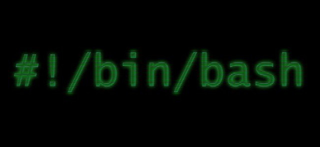

commande terminal unix
commande principal
Ctrl + Shift + T
ajout un nouvel onglet
Ctrl + W
fermel'onglet en cours
Ctrl+C
ferme et annule le travail en cours
Ctrl+ Z
envoie le travail
Ctrl+ D
se deconnecter
tab
completion automatique
Ctrl+A
Envoie le curseur en début de ligne
Ctrl+E
Envoie le curseur en fin de ligne
Ctrl+U
Efface la ligne
Ctrl+K
Efface la ligne depuis le curseur
Flèche du haut ou du bas
Explore l'historique des commandes
Ctrl+R
Recherche dans l'historique des commandes déjà tapées
bon courage :)